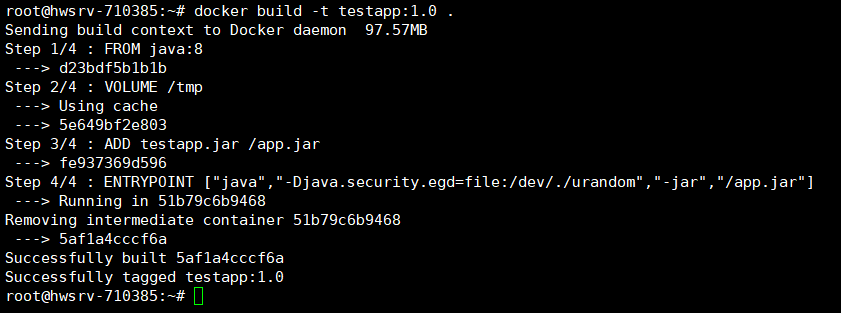
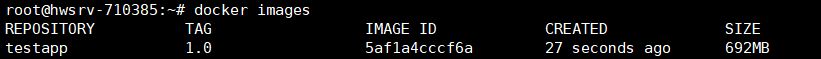

之前写过一篇关于Docker初使用的笔记，简单介绍了Docker和基本使用。这里记录一下怎么将自己的项目打包成Docker镜像然后部署在服务器的Docker里。
Docker部署应用
1. 制作镜像
1.1 准备项目
打包镜像首先需要将自己的项目打包成jar包，我这里准备的是一个SpringBoot项目打包成的jar包。
1.2 编写Dockerfile
1.2.1 关于Dockerfile
Dockerfile是一个包含用于组合映像的命令的文本文档。可以使用在命令行中调用任何命令。 Docker通过读取Dockerfile中的指令自动生成映像。一般包含四部分：基础镜像信息、维护者信息、镜像操作指令和容器启动时执行指令。Docker以从上到下的顺序运行Dockerfile的指令。为了指定基本映像，第一条指令必须是FROM。一个声明以＃字符开头则被视为注释。可以在Docker文件中使用RUN，CMD，FROM，EXPOSE，ENV等指令。
1.2.2 演示文件
这次演示的Dockerfile文件内容如下：
1 | |
#： 为 Dockerfile 中的注释。
1.2.3 Dockerfile详解
- FROM：指定基础镜像，需要在哪个镜像建立。必须为第一个命令。
1 | |
- MAINTAINER：指定维护者信息。
1 | |
- RUN：构建镜像时执行的命令。
1 | |
- WORKDIR：指定当前工作目录，相当于
cd。
1 | |
- EXPOSE：指定容器要打开的端口。
1 | |
- ENV：定义环境变量
1 | |
- ADD：将本地文件添加到容器中，tar类型文件会自动解压(网络压缩资源不会被解压)，可以访问网络资源，类似wget。
1 | |
- COPY：复制本地主机的 （为 Dockerfile 所在目录的相对路径）到容器中的。功能类似ADD，但是是不会自动解压文件，也不能访问网络资源。
1 | |
- VOLUME：挂载目录，创建一个可以从本地主机或其他容器挂载的挂载点，一般用来存放数据库和需要保持的数据等。
1 | |
- USER：指定运行容器时的用户名或 UID，后续的 RUN 也会使用指定用户。使用USER指定用户时，可以使用用户名、UID或GID，或是两者的组合。当服务不需要管理员权限时，可以通过该命令指定运行用户。并且可以在之前创建所需要的用户。
1 | |
- ENTRYPOINT：配置容器，使其可执行化。配合CMD可省去”application”，只使用参数。
1 | |
- CMD：构建容器后调用，也就是在容器启动时才进行调用。
1 | |
ENTRYPOINT 和 CMD 的区别：ENTRYPOINT 指定了该镜像启动时的入口，CMD 则指定了容器启动时的命令，当两者共用时，完整的启动命令像是 ENTRYPOINT + CMD 这样。使用 ENTRYPOINT 的好处是在我们启动镜像就像是启动了一个可执行程序，在 CMD 上仅需要指定参数；另外在我们需要自定义 CMD 时不容易出错。
可以使用以下命令覆盖默认的参数，方便调试 Dockerfile 中的 bug：
docker run -it --entrypoint=/bin/dockerfile feiyu/entrypoint:1
- ONBUILD：用于设置镜像触发器。
1 | |
- LABLE：用于为镜像添加元数据。
1 | |
- ARG：用于指定传递给构建运行时的变量。
1 | |
1.3 创建镜像
将准备好的项目jar包和Dockerfile文件上传到你的Linux服务器的同一目录下。然后执行下面命令来创建一个镜像。
1 | |
-t：指定镜像名字和TAG。
注意：这里最后面有一个 ’ . ‘，代表的是Dockerfile文件所在的路径(当前目录)，也可以替换为一个具体的Dockerfile的路径。
然后就可以看到下面的执行过程。

接下来通过docker images命令进行查看，就可以看到我们刚刚创建的镜像。

1.4 运行项目
运行项目就是通过刚刚我们制作的镜像来创建一个容器，然后进行运行，运行成功返回容器的id。
1 | |
-d：标识是让docker容器在后台运行。
-p：标识端口映射，前面是主机对外服务端口，后面是映射到docker容器的端口。
–name：定义一个容器的名字，方便后面执行操作。如果没有指定name，那么deamon会自动生成一个随机数字符串当作UUID。
最后一个是你创建容器使用的镜像名称和TAG。
然后就可以运行docker ps -a命令进行查看运行的容器了。
2. 部署Nginx
2.1 拉取Nginx镜像
拉取当前最新的Nginx的镜像。
1 | |
2.2 运行Nginx
根据刚刚拉取下来的nginx镜像，运行一个容器。
1 | |
这样nginx服务器就运行完成了，就可以进行访问了。
因为要对容器内部的配置文件进行编辑，而容器内部是没有vim编辑器的，可以下载一个，但是每次配置都学要进入到容器内部操作。显得太麻烦。也可以使用目录挂载的形式。首先创建本地目录，用于存放Nginx容器的相关文件信息。
1 | |
-p：确保目录名称存在，不存在的就建一个。
其中：
- html：目录将映射为nginx容器配置的虚拟目录。
- logs：目录将映射为nginx容器目录的日志内容。
- conf：目录里的配置文件将映射为nginx容器的配置文件。
将nginxV1容器内nginx默认的配置文件拷贝到当前目录下的conf目录。也可以通过容器id进行复制，容器id可以通过docker ps -a命令进行查看。
1 | |
然后进行部署:
1 | |
-v /home/nginx/www:/usr/share/nginx/html：将我们自己创建的 www 目录挂载到容器的 /usr/share/nginx/html。
-v /home/nginx/conf/nginx.conf:/etc/nginx/nginx.conf：将我们自己创建的 nginx.conf 挂载到容器的 /etc/nginx/nginx.conf。
-v /home/nginx/logs:/var/log/nginx：将我们自己创建的 logs 挂载到容器的 /var/log/nginx。
启动成功之后，就可以在本地配置我们的nginx.conf了，配置好之后重新启动容器即可生效。
1 | |
在nginx原来的配置文件中，它的server块没有直接写在nginx.conf里，而是通过include /etc/nginx/conf.d/*.conf;引入的。在容器的/etc/nginx/conf.d/目录下，有一个default.conf文件，进入容器
1 | |
上述操作也可以将容器名替换成容器id，退出容器时执行exit就行。
查看default.conf文件内容如下：
1 | |
可以看到这里就是一个server块。如果不使用想外部引入，那么就可以把上面nginx.conf文件中的include那一句给去掉，然后直接在nginx.conf里进行server块的配置。每次重新配置完nginx.conf文件之后，都需要重启容器。
2.4 部署SSL证书
首先获取SSL证书，阿里云免费证书是Symantec颁发的，下载的压缩包里面有两个文件，一个是.pem文件，一个是.key文件。腾讯云的免费证书是TrustAsia颁发的，下载的压缩包里面有两个文件，一个是.crt文件，一个是.key文件。二者只是证书颁发商不同，实际都是可以满足需求的。这里选用腾讯云申请的证书。因为我们之前启动容器时只映射了80端口，而https默认的时443端口，所以我们现在重新启动一个容器。
1 | |
首先将下载到的两个证书文件上传到Linux服务器，然后在nginx配置文件目录下创建cert目录，将证书文件放到该目录下。然后将存放证书文件的目录复制到容器中存放nginx配置文件的目录下。
1 | |
然后修改配置文件。
1 | |
对于用户不知道网站可以进行 https 访问的情况下，可以使用全站加密，让服务器自动把 http 的请求重定向到 https。在nginx.conf文件中添加以下配置：
1 | |
然后重启容器即可。
3. 总结
本篇主要记录了一下如何将自己的项目制作成Docker镜像，然后能在docker运行。以及Nginx的相关部署。关于docker还有很多东西要学，这里就对自己学的一点点东西做一个笔记，以方便下次使用。其余的等啥时候用到了在进行学习，这次就到这吧。